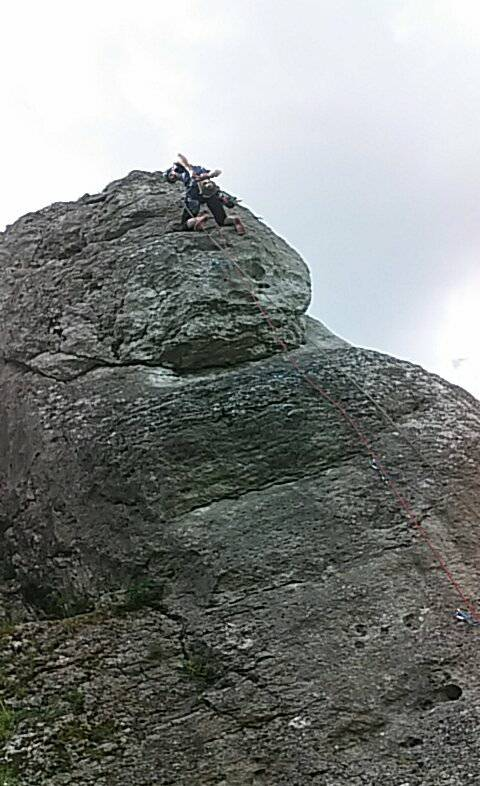

WSPINACZKA
Strona glowna
Sprzet
Kliknij zdjęcie ze mną
Dziś jest
Chcesz wiedzieć która godzina?
Kliknij mnie
Ukryj czas
Ciekawe źródła na temat wspinaczki:
Wspinaczka
Jura Krakowsko-Czestochowska
Sokoliki
Ciekawe miejsca
Oto najciekawsze, moim zdaniem, miejsca, w ktorych warto sie wspinac.
TATRY

O mnie
Michalina Całus
numer indeksu: 266377